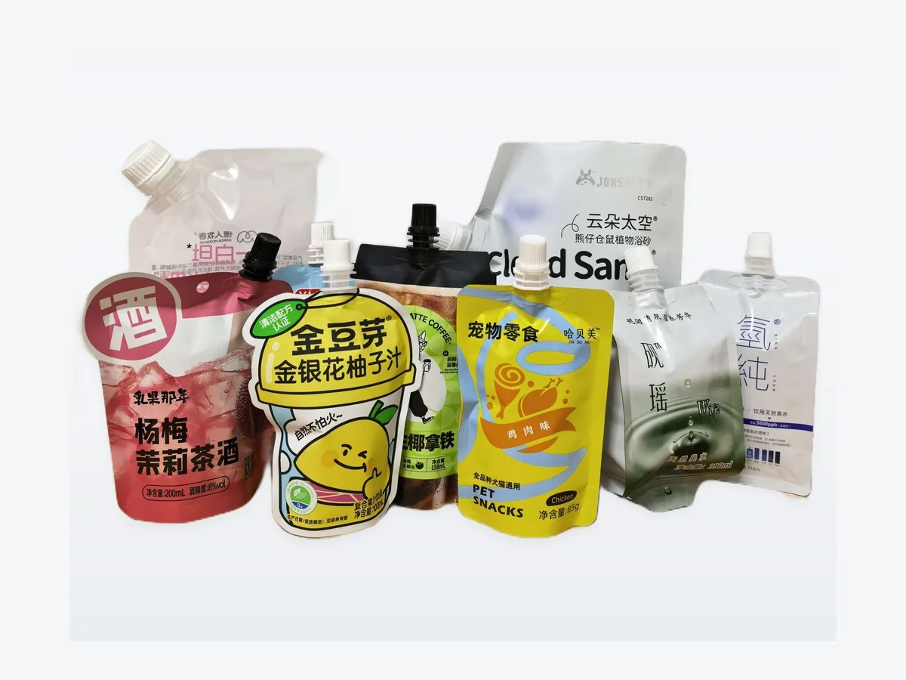

Sauces, dressings, pastes and purées need a pack that resists oil, acid and heat while still pouring cleanly. The spout and the seal do as much work as the film, so all three are specified together.

Sample shown for format reference only; any branding on the sample belongs to its respective owner. Production uses your own artwork and specifications.
A sauce pouch fails at the spout weld far more often than in the film body. Spout placement, weld quality and the cap are specified alongside the laminate, and the whole pack is checked against the product rather than against a generic structure.
Film barrier is only part of the job — the spout, the weld and the inner layer carry their own risks.
Oily sauces creep along the seal and through an unsuitable inner layer, weakening the weld and eventually leaking. An oil-resistant inner film and a correctly specified seal are the fix, not a thicker bag.
Tomato, vinegar and fruit-based sauces are acidic. The inner layer has to be chemically suitable for the pH, and this is checked per product rather than assumed from the product category.
The spout-to-film weld is the single most common leak point. It is set by the spout type, the film thickness and the sealing equipment, so the spout is matched to your filling machine.
A retort pouch has to survive sterilisation without delamination or seal creep. Retort-grade structures and a seal strength that holds under pressure are a different specification from an ambient pack.
Indicative starting points. The closure and the spout are usually fixed by your filling line.
| Pouring sauces and dressings | Spouted stand-up pouch with screw cap; fill weight and viscosity set the bag size and the spout bore |
|---|---|
| Thick pastes and purées | Spouted pouch with a wider bore, or a stand-up pouch with a zipper where the pack is spooned out |
| Shelf-stable ambient sauce | Retort-grade spouted pouch, sterilised after filling, with a seal rated for the process |
| Food service and bulk | Large spouted pouches and bag-in-box style formats for kitchens, refill and industrial use |
| Chunky products | Flat bottom or stand-up pouch with a wide opening; a spout restricts piece size |
| Single-serve and travel | Small spouted pouches for condiments, dressings and on-the-go formats |
Selected against oil content, acidity, fill temperature and whether the pack is retort sterilised.
Sauce ranges arrive as a family: a mild, a hot, a limited edition. Digital printing runs the variants in a single order with no cylinder set per design, which keeps a launch affordable. Once one recipe repeats at volume, gravure takes over for that design at a lower unit cost, with the artwork carried across unchanged.
Four details decide the structure, and two decide the price.
What buyers ask before committing to a spouted pouch programme.
The full format and closure range for spouted packs.
Structures and seal strength for sterilised packs.
How retort laminates are chosen by process conditions.
Comparing formats by product form and filling method.
What drives the unit price and how to lower it.
Send the product, pH, fill temperature, fill weight and your filling equipment, and we reply from Qingdao within one business day.